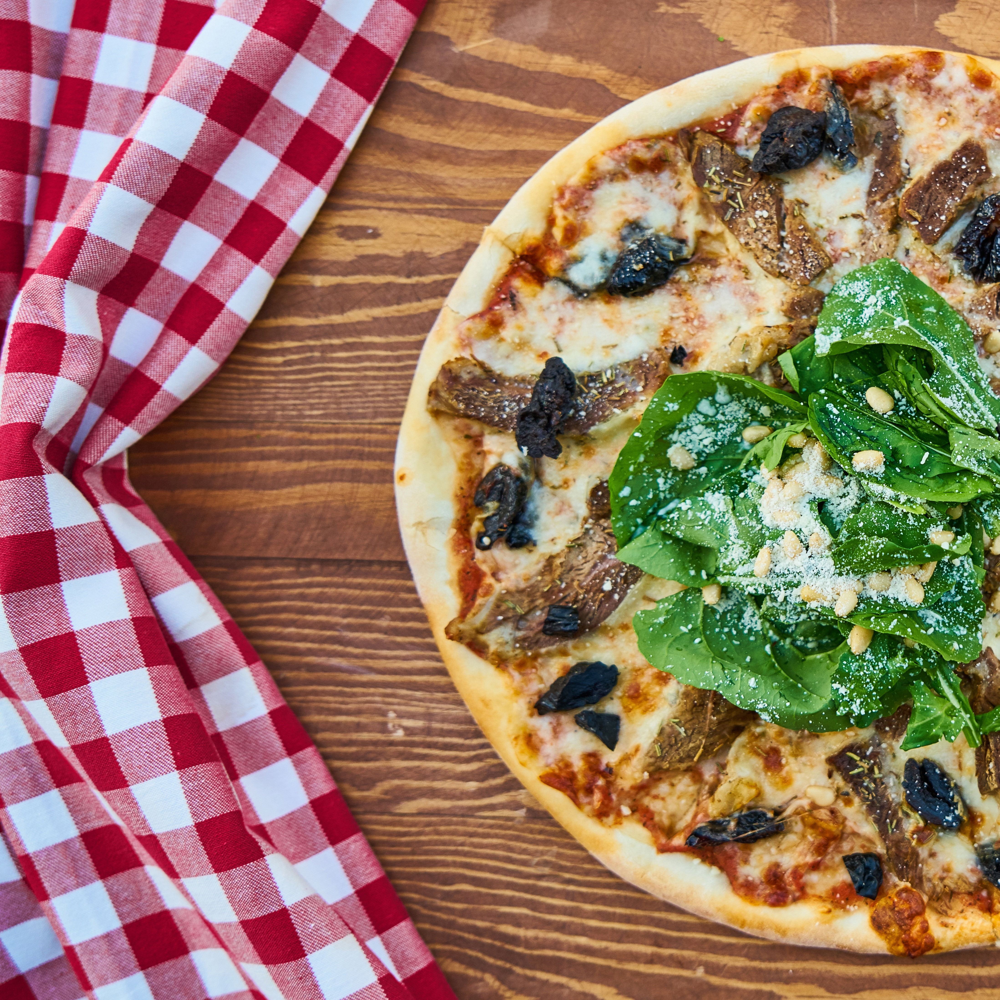

Pizza

Description
This pesto pizza can be made with your favorite prepared pesto or
homemade pesto. It's so quick to make for a light and flavorful
alternative to regular cheese and tomato pizza!
- 1 pound spaghetti
- 4 tablespoons butter
- 4 ounces marinara sauce, divided
- 2 teaspoons olive oil
- wash your hands
- preheat your oven to 450°F (230°C)
- roll out the dough on a floured surface
-
spread the sauce over the dough, leaving a small border around
the edges
- top with your favorite toppings
-
bake for 15-20 minutes or until the crust is golden and the
cheese is melted
Back Home